Pipeworks is a mod for Minetest allowing the crafting and usage of pipes and tubes. In addition to providing pipes for transporting liquids and tubes for transporting items, it also contains a number of devices for working with them. Here's what it looks like:
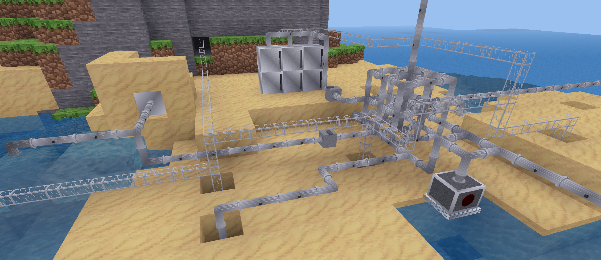Pipeworks requires a recent version of Minetest. Mesecons is recommended as well for the best possible experience.
To install Pipeworks, simply rename the folder to "pipeworks", and drop it into one of the Minetest mod folders. For more information, see the Minetest website for a mod installation guide.
All parts of Pipeworks are licenced under the WTFPL.
Crafting recipes noted here apply only for plain Pipeworks. If Technic is installed, Pipeworks items use alternate recipes. See the Technic documentation for more details.
Pipes are rounded, flanged devices that can transport liquids around - by default, only water. They can automatically connect to other pipes and devices that are pipe-compatible, such as pumps and spigots.
Pipes transport liquids at a speed of one meter (node) per second - a run of 30 pipes will take 30 seconds to transport liquid from one end to another.
Digging a pipe carrying liquid drops the empty pipe - the liquid inside is lost.
Pipes "light up" when they contain liquid.
Here's how you craft it:
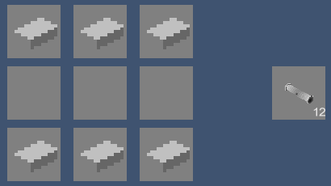Spigots output the liquid input via pipe into the world.
Spigots only connect from one side.
Connecting a spigot to a pipe carrying water makes water flow out of the bottom of the spigot.
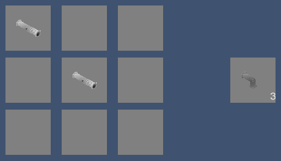Pumps can be placed inside or over a water source. They are toggled on and off by being punched, or directly controlled using Mesecons.
Pumps can be connected to pipes from above. Pipes do not connect to pumps from the side or bottom.
Here's how you craft it:
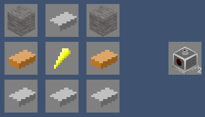Valves control fluid flow. When active, valves allow liquids to flow through them. Otherwise, liquids cannot flow through them. They are toggled on and off by being punched, or directly controlled using Mesecons.
Here's how you craft it:
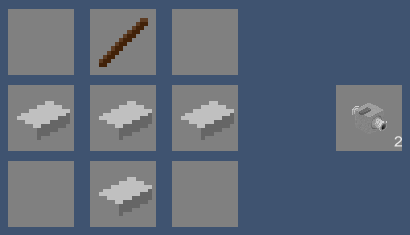Storage tanks store liquid in a compact way. Placing multiple storage tanks on top of each other forms one large tank with the same capacity as all the single tanks added together.
Storage tanks can be connected to pipes from above or below. Pipes do not connect to storage tanks from the side.
Here's how you craft it:
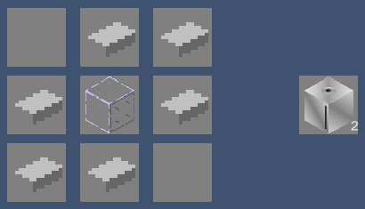Gratings are decorative items that appear similar to fine metal grids used as barriers.
Here's how you craft it:
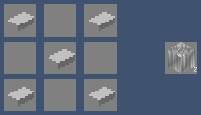Sealed/airtight pipe entries act as pipes do, except they fill a full block and therefore are generally used for aesthetic purposes, such as running piping through walls.
Sealed/airtight pipe entries can be connected to pipes from the sides, the top, or the bottom.
Here's how you craft it:

Flow sensors output a Mesecons signal when liquid is present in it, and otherwise does not. They can be used to determine when liquid has reached a particular point.
Here's how you craft it:
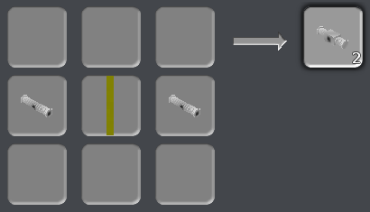Unprocessed plastic base is used primarily to make plastic sheeting, which is done through the process of smelting in a furnace.
Here's how you craft it:
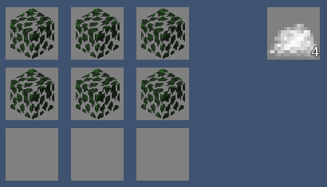Plastic Sheeting
Plastic sheeting is an essential part of crafting many tube-related recipes. It is the result of smelting unprocessed plastic base in a furnace.
Here's how you smelt it:
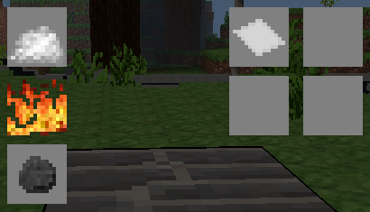Tubes are boxy, transparent devices that can transport items around. They can automatically connect to other tubes and devices that are tube-compatible, such as chests and injectors. Certain devices may connect to tubes only from certain sides.
Breaking a tube carrying items simply drops the items onto the ground.
Here's how you craft it:
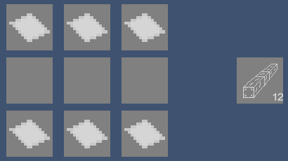Ordinary chests found in the default game connect to tubes from every side except the front.
Items can be added to chests using tube-related devices, or removed from them using filters/injectors.
Attempting to add items to a full chest results in the item being dropped onto the ground.
Ordinary furnaces found in the default game connect to tubes from every side except the front.
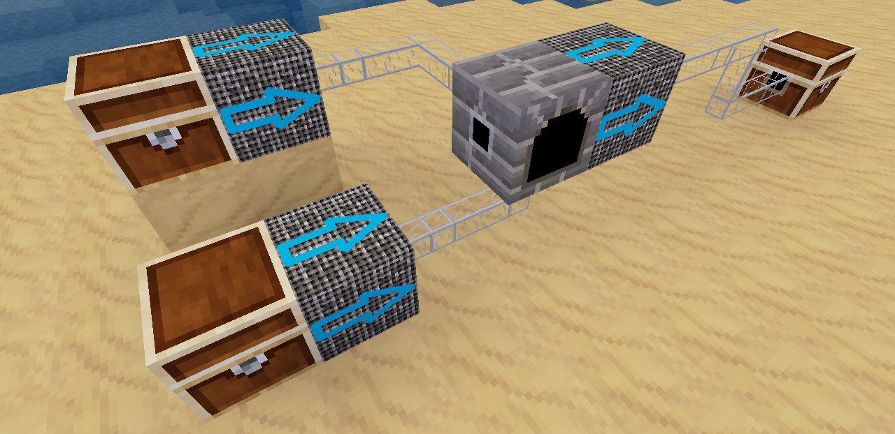Fuel items can be added to furnaces from the bottom, and items to be smelted can be added from the back. Smelted items can be removed from them using filters/injectors.
Attempting to add items to a full furnace results in the item being dropped onto the ground.
Filters/injectors take items from the node behind them and sends them out in front. They only connect to tubes from the front.
Filters/injectors act only when punched, or when activated via a Mesecons signal.
Right clicking a filter/injector brings up an inventory. If items are added to the inventory, only items matching them will be taken from the node behind it when activated. Items that match the first slot on the filter/injector's inventory are always chosen before items in the second slot, which are always chosen before the third slot, etc.
Filters/injectors cannot be dug if they contain any items in their inventory.
Here's how you craft it:
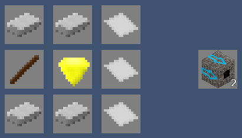Mese filters/injectors take entire stacks of items from the node behind them and sends them out in front all at once.
Mese filters/injectors act only when punched, or when activated via a Mesecons signal.
Right clicking a mese filter/injector brings up an inventory. If items are added to the inventory, only stacks of items matching them will be taken from the node behind it when activated. Stacks of items that match the first slot on the mese filter/injector's inventory are always chosen before stacks of items in the second slot, which are always chosen before the third slot, etc.
Mese filters/injectors cannot be dug if they contain any items in their inventory.
Here's how you craft it:
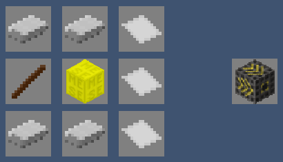Mese sorting tubes are special tubes that can be used to sort items or force them to move in a certain direction at junctions.
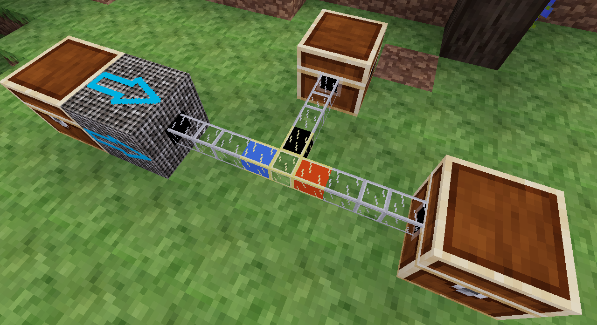When placed, each direction the tube has a connection to has a distinct color.
Right clicking the tube brings up a form similar to the following:
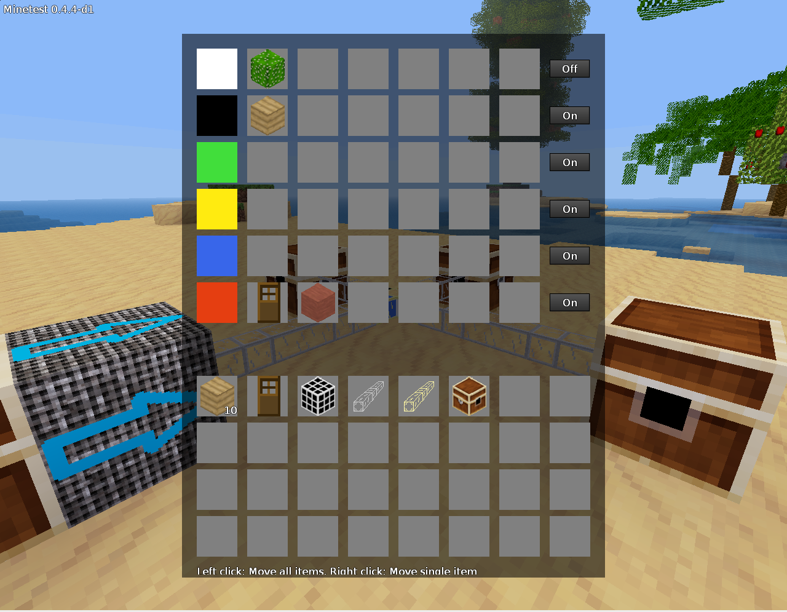Each row is associated with the color on the left side.
The far right contains an on/off button.
When on, only items that match those in the row associated with the color are allowed to move in that direction. If there are no items in the row, all items are allowed.
When off, no items will get out through here.
Here's how you craft it:
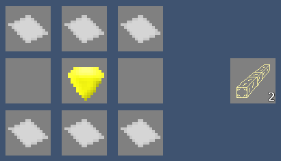Or alternatively:
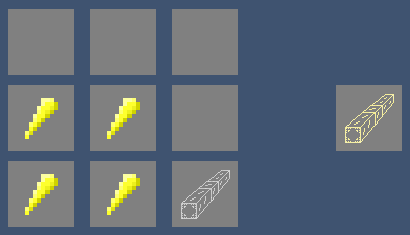Detector tubes are special tubes that output a Mesecons signal when an item passes through them.
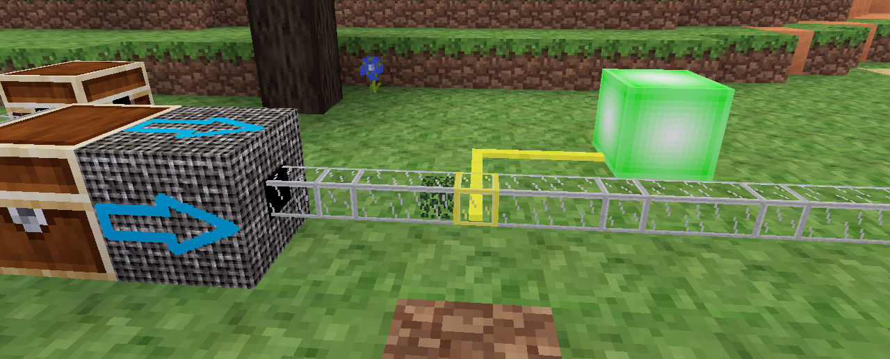The tubes turn off again when the item leaves.
Here's how you craft it:
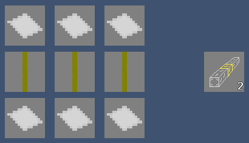Accelerator tubes are special tubes that transport items significantly faster than normal tubes. They appear similar to normal tubes, except with a greenish-blue tint.
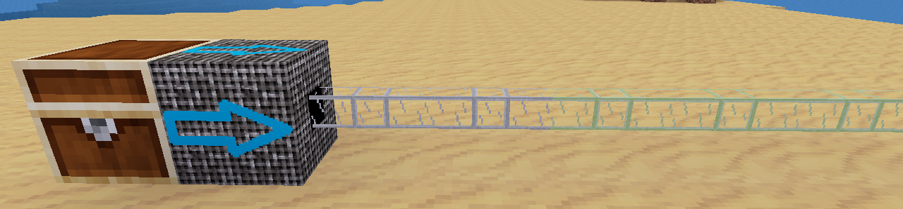Here's how you craft it:
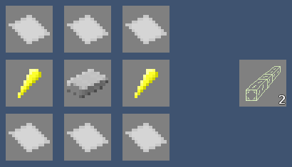Teleporter tubes are special tubes that move items to other teleporter tubes, regardless of the distance separating them.
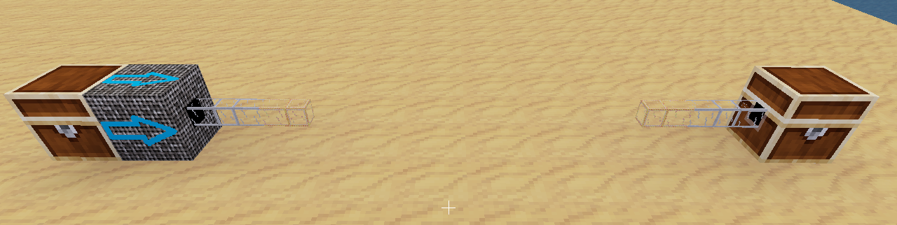Putting items into the tube via tube-related devices causes them to be teleported.
Right clicking a teleporter tube brings up a form allowing entry of a channel string, similar to the following:
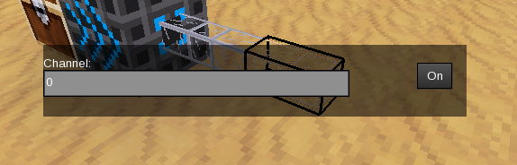Only teleporter tubes that have the same channel will be linked together and allow items to pass through.
The button on the right toggles between "On" and "Off". When the button reads "On", the tube can receive items. Otherwise, items can only be teleported out of the tube, but not into it.
If an item enters a teleporter tube, and there are multiple possible teleporter tubes that it can go to, a target is chosen at random from the possibilities.
Here's how you craft it:
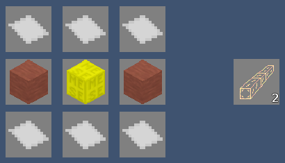Autocrafters are devices that can automatically follow craft recipes to make new items.

Right clicking an autocrafter brings up a form similar to the following:
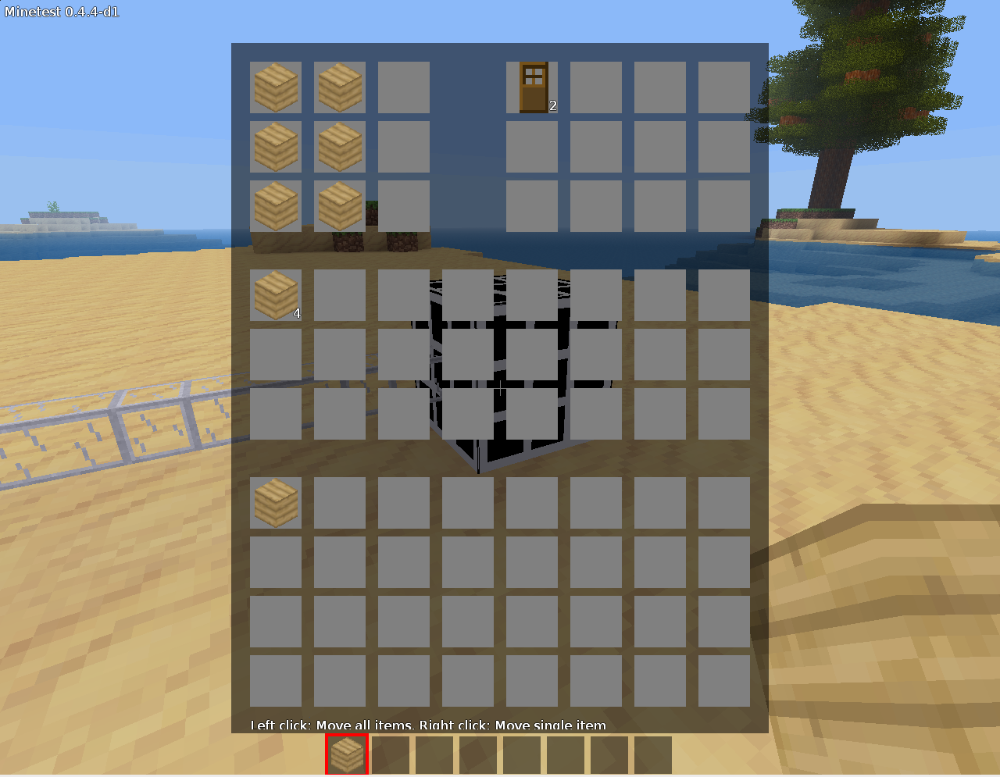The slots in the top left of the form represent a crafting grid, where items can be arranged in the pattern of a craft recipe. These items are not consumed when the autocrafter operates.
The slots in the top right of the form are the craft results. Items that have been crafted can be found here. These can also be retrieved from the device using filters/injectors
The slots in the middle of the form are the autocrafter's inventory, storing the input materials. Items here are used to craft when the device operates. New items can be added here using tube-related devices.
The slots at the bottom of the form are the player's inventory.
When sufficient materials are present in the autocrafter's inventory to craft according to its recipe, the device automatically starts crafting them until it runs out of materials.
Here's how you craft it:
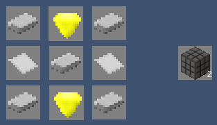Deployers are devices that place blocks as a player would if one were standing at the exact location of the deployer. They connect to tubes only from the back side.
Deployers act only when activated via a Mesecons signal.
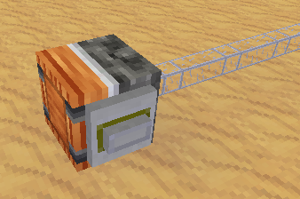Right clicking a deployer brings up a form similar to the following:
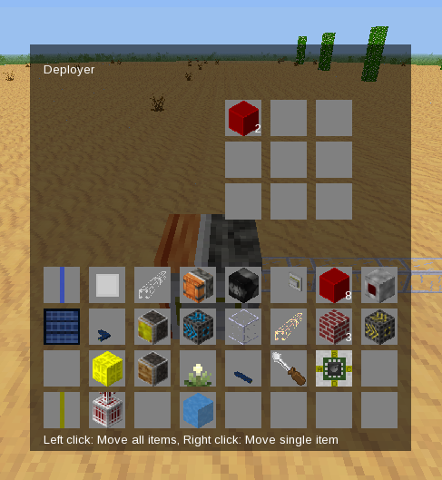The slots in the top of the form are the deployer's inventory, storing materials that are placed when the deployer activates. They are taken in order from left to right, top to bottom. New items can be added here using tube-related devices.
The slots at the bottom of the form are the player's inventory.
Upon activation, a deployer places a node from its inventory into the space directly adjacent to its front side if and only if the space is air. The front side is the face that is fully orange.
Here's how you craft it:

Node breakers are devices that dig blocks as a player would if one were standing at the exact location of the node breaker and used a MESE pick. They connect to tubes only from the back side.
Node breakers act only when activated via a Mesecons signal.
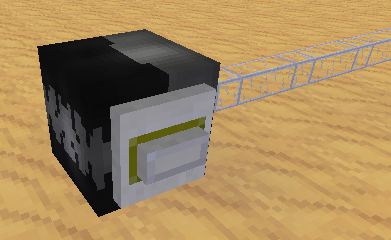Upon activation, a node breaker digs the node in the space directly adjacent to its front side if and only if the node is non-liquid, diggable, and not air or unloaded. The front side is the face that has a black mouth-like pattern on a grey background.
Here's how you craft it:
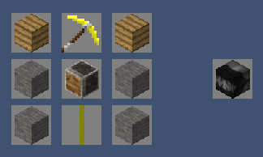Sand tubes are special tubes that vacuum up free items around it. When an item drops near the sand tube, it is sucked up and sent along the tube.
Sand tubes have an effective radius of 2 meters (nodes). Outside of this sphere, items are unaffected.
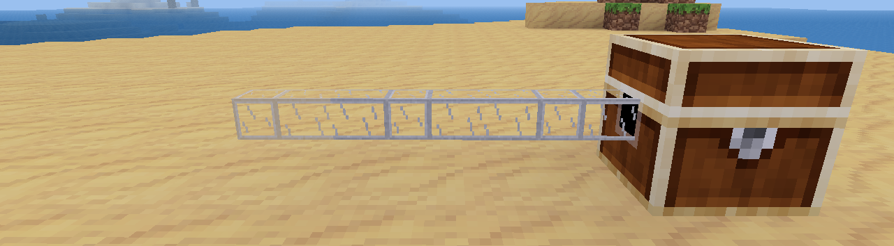Here's how you craft it:
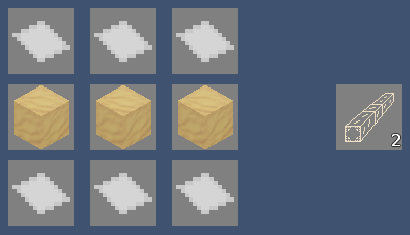